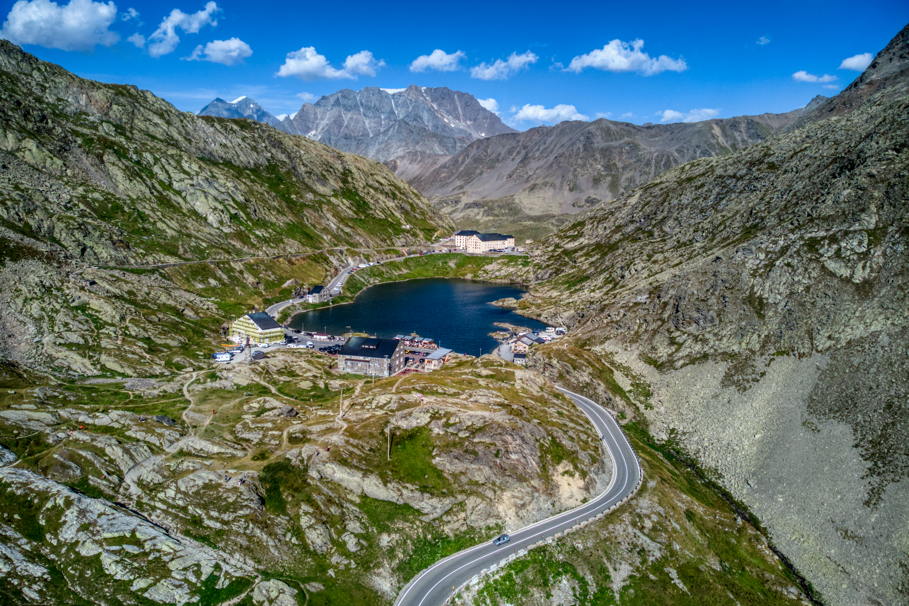

Le Col du Grand-Saint-Bernard est l'un des cols alpins les plus mythiques et chargés d'histoire d'Europe, situé à une altitude impressionnante de 2 469 mètres,
à la frontière entre la Suisse (canton du Valais) et l'Italie (vallée d'Aoste). C'est un haut lieu de passage emprunté depuis l'Antiquité, traversé par les Romains,
les pèlerins se rendant à Rome, et les voyageurs en quête de paysages grandioses.
Histoire et patrimoine : Le col abrite le célèbre Hospice du Grand-Saint-Bernard, fondé au XIe siècle par saint Bernard de Menthon pour secourir les voyageurs égarés.
C'est également le berceau historique des célèbres chiens Saint-Bernard, autrefois élevés par les moines.
Environnement et paysages : Le sommet est dominé par un lac de montagne souvent gelé une grande partie
de l'année et offre des panoramas saisissants sur les sommets environnants des Alpes valaisannes et graies.
Durée de la randonnée jusqu'à la frontière italienne
La durée de la randonnée dépend de votre point de départ, mais l'itinéraire le plus classique et accessible débute généralement depuis
l'Hospice ou les zones de stationnement situées juste en contrebas du col.
Depuis le sommet du col (Hospice) : Rejoindre la ligne de frontière officielle avec l'Italie est très rapide. Il ne faut compter qu'environ 15 à 30 minutes de marche
(aller simple), car la route ou les sentiers passent directement par le col frontalier où se trouvent les anciennes structures douanières et la célèbre statue de Saint-Bernard.
Randonnées plus longues dans les environs : Si vous souhaitez faire une véritable randonnée d'immersion
(par exemple depuis le versant suisse ou en bouclant autour du lac et des crêtes environnantes), les parcours varient généralement entre 2 et 4 heures de marche, offrant une immersion complète
dans la haute montagne alpine.
Différentes activités à faire au Col du Grand-Saint-Bernard
Le site offre une multitude d'activités adaptées aux amoureux de la nature, de l'histoire et des grands espaces :
Randonnée pédestre : Le col est une étape incontournable de la Via Francigena (chemin de pèlerinage vers Rome) et propose de nombreux sentiers
de randonnée balisés menant vers les crêtes frontalières, les lacs d'altitude et les refuges voisins.
Visite culturelle et historique : Il est possible de visiter l'Hospice, de découvrir son église baroque, son musée présentant l'histoire du col, ses collections d'art et de pièces romaines,
ainsi que de saluer (selon la saison) les légendaires chiens Saint-Bernard.
Activités hivernales et de printemps : En hiver et au printemps, lorsque la route est fermée aux véhicules, le col devient un paradis pour le ski de randonnée,
les balades en raquettes et le ski de fond dans une ambiance sauvage et isolée.
Cyclisme et motocyclisme : Durant la saison estivale (généralement de juin à octobre), l'ascension du col par la route sinueuse est un défi
mythique très prisé par les cyclistes routiers et les motards du monde entier.
